Console Translator: Dịch game
Chơi game nào cũng hiểu
Dịch phụ đề game PS5 sang tiếng Việt và đọc to, ngay trên iPhone. Không cần capture card.
Tham gia kênh Telegram
Có link tải app (TestFlight), thông báo bản mới và nơi hỏi đáp, báo lỗi.
Vào kênh Telegram t.me/pstranslatorỦng hộ tác giả
Nếu thấy hữu ích thì mời mình ly cà phê để có thêm động lực cập nhật nhé.
TVPhụ đề ngay trên màn hình TV
Máy chơi game vẫn cắm HDMI thẳng vào TV. Chỉ phụ đề và giọng đọc đi từ iPhone sang TV qua Wi-Fi nên hình ảnh không bị giảm chất lượng hay thêm độ trễ.
- Android TV / Google TV: được, cần Android 9 trở lên (TV đời 2018 trở về trước thường không cài được). TV nào khóa quyền Hiển thị trên ứng dụng khác thì không hiện được phụ đề.
- TV LG webOS: thử nghiệm, cần Developer Mode. Đã chạy trên webOS 7 (TV 2022), đời khác chưa kiểm tra hết.
- TV Samsung từ 2017 (Tizen 3.0 trở lên): thử nghiệm, cần Developer Mode, máy tính và tài khoản Samsung. Một số TV đời 2018 đang gặp lỗi khi cài.
- TV Samsung 2016 trở về trước: không dùng được.
- TV hệ điều hành khác, Android Box: không hỗ trợ.
Android TVCài bằng remote
Mã Downloader dùng để tải app trên TV, khác với mã ghép phụ đề 8 số. Từ bản 0.2.3, app TV tự hiện nút Cập nhật khi có bản mới.
Cài app
- Trên TV, cài Downloader by AFTVnews từ Google Play.
- Vào Cài đặt → Ứng dụng → Quyền truy cập đặc biệt → Cài đặt ứng dụng không rõ nguồn, cho phép Downloader.
- Mở Downloader, nhập mã đúng loại TV ở trên, tải rồi cài file APK. TV Xiaomi mua từ Trung Quốc dùng bản TV Xiaomi nội địa, phụ đề chỉ hiện sau khi chuyển sang cổng HDMI.
Cấp quyền và mở app
- Mở Console Translator TV, bấm Cấp quyền hiển thị trên ứng dụng khác.
- Bật quyền cho app rồi bấm Back. Nếu được hỏi, cho phép app bỏ qua tối ưu hóa pin.
- App hiện mã 8 số và địa chỉ TV. Làm tiếp phần Ghép nối với iPhone ở dưới.
android.permission.SYSTEM_ALERT_WINDOW → Allow.TV Samsung (Tizen)Windows / Mac + mã
Dùng Windows 10/11 hoặc macOS 12 trở lên, chỉ TV Samsung từ 2017 trở lên (Tizen 3.0+). TV 2016 trở về trước không dùng được; một số TV đời 2018 đang gặp lỗi khi cài. Điện thoại vẫn chạy dịch; PC chỉ cần lúc cài.
Tải bộ cài Samsung cho PC 1.0.15 Tải bộ cài Samsung cho Mac 1.0.9Giải nén file ZIP, không tải Source code. Nhận mã SSTV qua Telegram.
Giải nén ZIP, mở Chay-Console-Translator.bat (hoặc app trên Mac). Công cụ có ba bước đánh số:
- Bước 1, trên TV: mở Ứng dụng, bấm 1 2 3 4 5 trên remote, bật Developer mode, nhập vào ô Host PC IP dãy số lớn hiện trong ô Bước 1 của công cụ (IP của máy tính). Bấm OK rồi rút dây nguồn TV 30 giây.
- Bước 2, kết nối: xem IP của TV (Cài đặt → Chung → Mạng → Trạng thái mạng), nhập vào công cụ, bấm Kiểm tra kết nối TV.
- Bước 3, cài: nhập mã SSTV đầy đủ, bấm Cài đặt lên TV, đăng nhập tài khoản Samsung của bạn khi trình duyệt mở, chờ hoàn tất.
- Mỗi lần chơi: trên TV mở Console Translator TV, chọn cổng HDMI của máy chơi game, rồi ghép điện thoại bằng mã 8 số (lần đầu).
App tự hiện hình HDMI bên trong nó, nên bấm Home sẽ thoát cả hình lẫn phụ đề; mở lại app để chơi tiếp. Mã SSTV khác mã LGTV và mã ANDROID.
TV LG (webOS)Windows / Mac + mã
Dùng Windows 10/11 hoặc macOS 12 trở lên. Điện thoại vẫn chạy dịch; máy tính chỉ cần để cài app lên TV lần đầu, sau đó iPhone tự mở app trên TV.
Tải bộ cài LG cho PC 1.2.17 Tải bộ cài LG cho Mac 1.0.5Giải nén file ZIP, không tải Source code. Nhận mã LGTV qua Telegram. Mã này khác mã beta Android và gói PRO trên iPhone.
1. Chuẩn bị TV, làm lần đầu
- Tạo tài khoản LG Developer. Trên TV, cài Developer Mode từ LG Apps / LG Content Store và đăng nhập.
- Bật Dev Mode Status, chờ TV khởi động lại. Mở Developer Mode, bật Key Server.
- PC, iPhone và TV cùng mạng. Ghi lại IP và Passphrase 6 ký tự đang hiện trên TV.
2. Cài bằng Windows
- Giải nén ZIP, mở Chay-Console-Translator.bat. Nếu thiếu Node.js, bấm Cài Node.js, cài bản LTS rồi mở lại công cụ.
- Nhập IP và Passphrase, bấm Kết nối TV. Kiểm tra đúng IP trước khi xác nhận khóa kết nối.
- Nhập mã LGTV đầy đủ, bấm Cài đặt lên TV, chờ hoàn tất. Công cụ tự chuẩn bị gói cài và cài đặt lên TV.
Cài bằng Mac: giải nén ZIP, kéo Console Translator LG vào Applications rồi mở app. Cần macOS 12 trở lên (Intel/Apple Silicon). Nếu thiếu Node.js, bấm Cài Node.js ngay trong app và chờ hoàn tất. Nút Hỗ trợ Telegram dùng để nhận mã hoặc gửi log. Nhập IP/Passphrase, kết nối TV rồi nhập mã LGTV và cài. Nếu macOS chặn mở, vào Cài đặt hệ thống → Quyền riêng tư & Bảo mật → Vẫn mở với ZIP từ GitHub chính thức.
Mac báo “Console Translator LG chưa được mở”

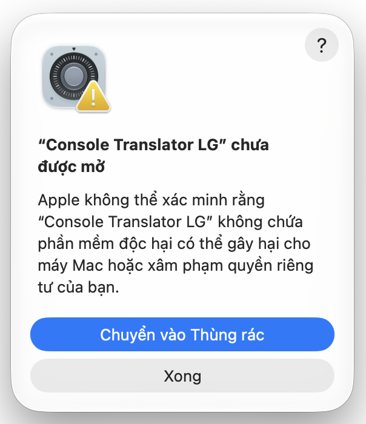
- Bấm Xong trong cảnh báo. Không chọn Chuyển vào Thùng rác nếu muốn tiếp tục cài.
- Mở Cài đặt hệ thống → Quyền riêng tư & Bảo mật, kéo xuống phần Bảo mật.
- Tại thông báo chặn Console Translator LG, bấm Vẫn mở / Open Anyway. Nhập mật khẩu Mac hoặc dùng Touch ID nếu được hỏi.

Chạm ảnh để xem lớn. Bấm Vẫn mở ở bên phải. - Khi cảnh báo xuất hiện lại, bấm Mở / Open.
Nếu chưa thấy Vẫn mở, thử mở app lần nữa rồi quay lại mục Bảo mật. Chỉ thực hiện với bản tải từ GitHub chính thức. Hướng dẫn của Apple.
Mac nhớ thông tin TV trong Keychain. Mã đã gắn với Windows cần cấp riêng cho Mac.
3. Mỗi lần chơi
PC nhớ IP/Passphrase sau khi kết nối; nếu trên TV đổi, nhập lại. Thu hồi hoặc xóa mã cài chỉ chặn cài tiếp, app TV đã cài vẫn mở được. Khả năng hiện trên HDMI tùy mẫu TV.
Mã cũ 32 ký tự vẫn dùng được. PC 1.2.5 trở xuống không nhận mã LGTV mới: đóng bản cũ, giải nén 1.2.17 vào thư mục mới rồi mở file .bat.
Ghép nối TV với iPhoneDùng cho mọi loại TV
Bước 1: Mở máy PS5 và mở app trên TV
Sau khi đã cài app lên TV theo hướng dẫn ở trên, bạn bật máy PS5 trên TV rồi mở app nhận phụ đề theo từng dòng TV:
- TV Samsung: Mở trực tiếp app Console Translator TV trên màn hình TV.
- TV LG (webOS): máy tính chỉ cần để cài app lên TV lần đầu. Mỗi lần chơi, bấm Mở app trên TV LG ngay trong mục Kết nối TV của iPhone (Android cũng có nút tương tự).
- Android TV / Google TV: Bấm mở trực tiếp app Console Translator TV trên TV.
Màn hình TV sẽ hiển thị Địa chỉ TV và Mã ghép nối (8 số):
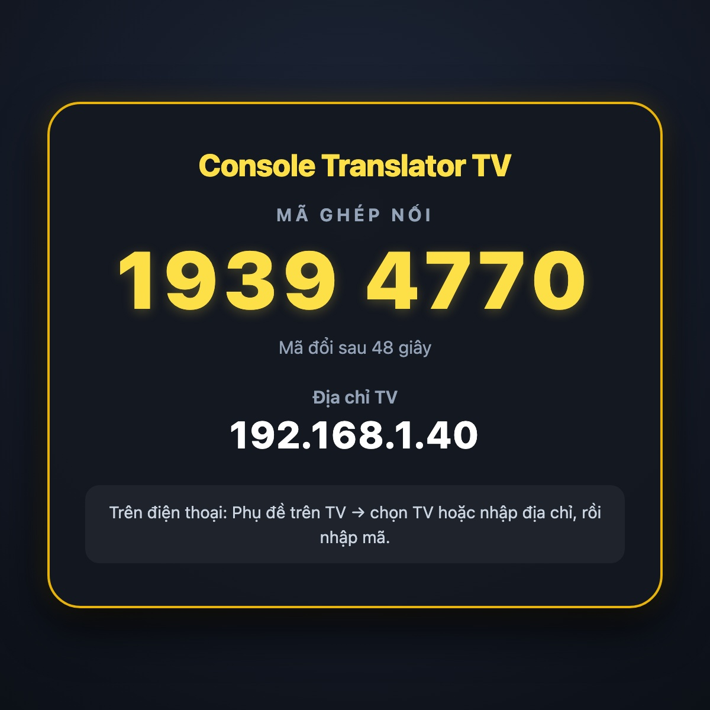

Bước 2: Mở app trên iPhone và chọn Dịch khi chơi TV
1. Tại màn hình chính, bấm Bắt đầu dịch game.
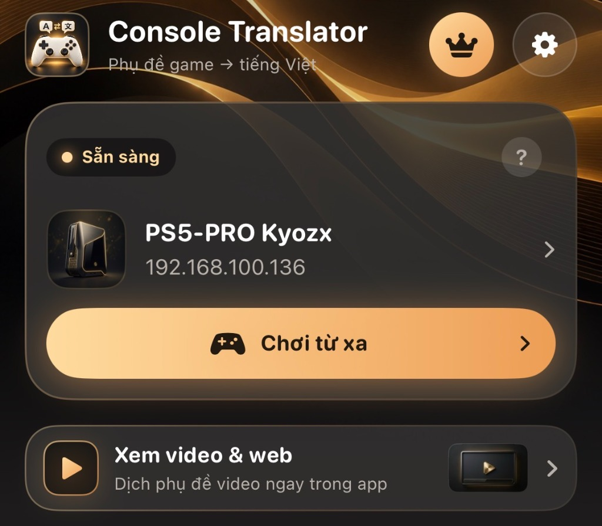
2. Chọn chế độ Dịch khi chơi TV:
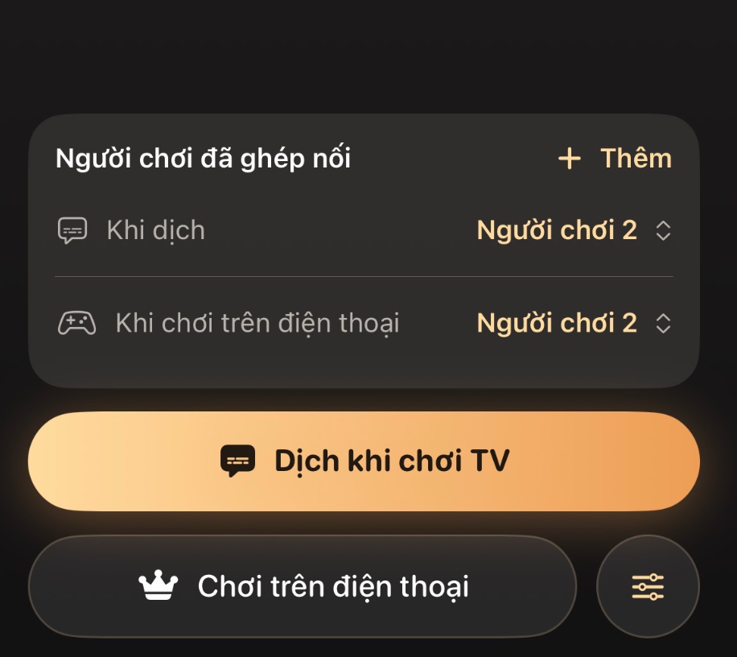
Bước 3: Bấm biểu tượng TV trên thanh công cụ
Tại màn hình dịch, bấm vào biểu tượng TV 📺 trên thanh công cụ trên cùng:
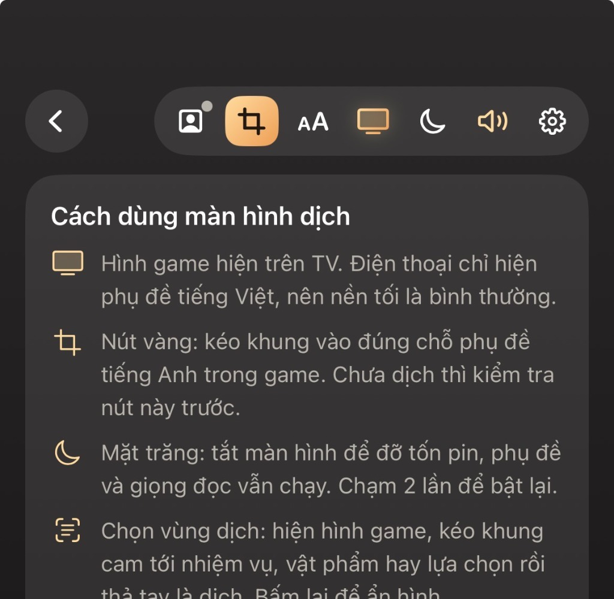
Bước 4: Nhập IP và Mã 8 số để kết nối
Nhập đúng Địa chỉ TV và Mã 8 số đang hiển thị trên màn hình TV, rồi bấm Kết nối:
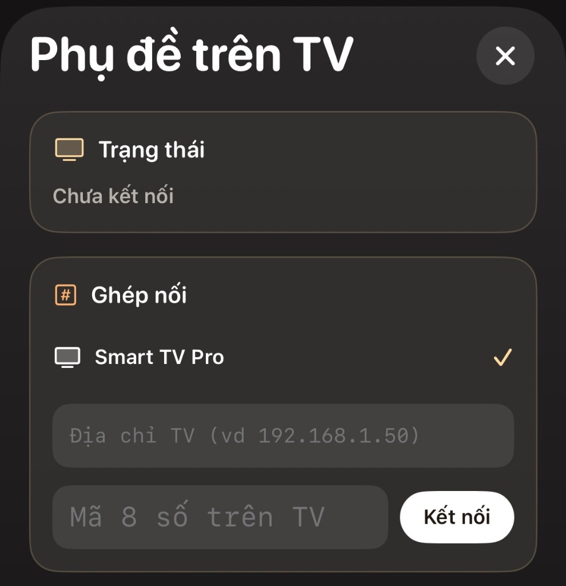
Khi báo kết nối thành công, bạn chỉ cần chuyển TV sang cổng HDMI của máy console (PS5/Xbox) để chơi, phụ đề tiếng Việt sẽ tự động nổi trên màn hình TV!
Mã ghép nối đổi mỗi phút nhưng chỉ cần nhập một lần đầu. Cỡ chữ, màu, nền, vị trí và giọng đọc đều chỉnh trên iPhone.
Lỗi thường gặp trên TV
- LG không kết nối: kiểm tra Developer Mode còn hạn, Key Server đang bật, IP đúng và máy tính cùng Wi-Fi với TV.
- LG báo lỗi cài đặt: mở lại công cụ và thử cài lại; nếu vẫn lỗi, gửi ảnh cho hỗ trợ trước khi gỡ app.
- Không kết nối được TV: mở app trên TV trước, kiểm tra TV và iPhone cùng Wi-Fi, bật quyền Mạng cục bộ cho app trên iPhone, rồi nhập đúng địa chỉ đang hiện trên TV.
- Sai mã: nhập mã 8 số mới nhất đang hiện trên TV.
- Phụ đề biến mất: Android TV cần bỏ tối ưu hóa pin; LG webOS cần bấm Mở app trên TV LG trên iPhone lại nếu đã dùng nút Home.
1Cài app
App phát hành qua TestFlight, cách cài thử nghiệm chính thức của Apple. Không cần máy tính, không phải cài lại sau 7 ngày.
- Mở App Store, tìm và cài app TestFlight (biểu tượng chiếc máy bay màu xanh).
- Vào kênh Telegram, bấm vào link TestFlight được ghim.
- TestFlight mở ra, bấm Chấp nhận rồi Cài đặt.
2Chỉnh trên PS5 (làm một lần)
Cầm tay cầm PS5, vào Cài đặt (biểu tượng bánh răng ở góc trên bên phải màn hình chính). PS5 không có tiếng Việt nên chữ trong ngoặc là tên tiếng Anh bạn sẽ thấy trên máy.
Bật chơi từ xa
- Bật chơi từ xa Enable Remote PlayBấm vào mục này, rồi bật đúng người chơi PS5 mà app sẽ dùng để kết nối. Chọn sai người chơi thì app sẽ không kết nối được.
- Ẩn trạng thái chơi từ xa Hide Remote Play Connection StatusNên bật. Ẩn dòng thông báo "đang chơi từ xa" trên TV cho màn hình gọn khi chơi.
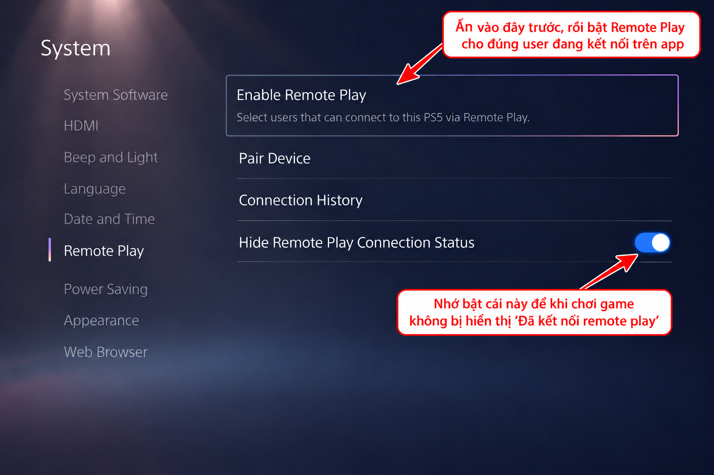
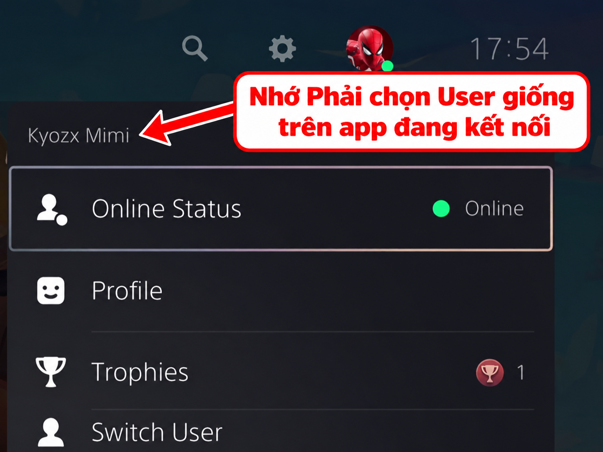
Cho app tự bật PS5 khi máy đang nghỉ
- Giữ kết nối Internet Stay Connected to the Internet
- Cho phép bật PS5 qua mạng Enable Turning On PS5 from Network
3Ghép nối iPhone với PS5 (làm một lần)
Để PS5 tin cậy iPhone của bạn. Trong app có 3 bước: tìm máy, lấy mã người chơi, nhập mã 8 số hiện trên TV. Làm một lần, lần sau chỉ cần bấm Kết nối.
- iPhone và PS5 dùng chung một mạng Wi-Fi ở nhà (không dùng Wi-Fi khách, tắt VPN).
- Đã làm xong bước 2: bật Chơi từ xa (Enable Remote Play) trên PS5.
- Lần đầu mở app, iPhone hỏi quyền Mạng cục bộ: bấm Cho phép.
Nên dùng tài khoản phụ
App sẽ kết nối vào PS5 bằng một tài khoản PlayStation. Nếu dùng chung tài khoản bạn đang cầm tay cầm chơi, tay cầm sẽ bị ngắt. Vì vậy nên dùng một tài khoản phụ cho app:
- Trên PS5, ở màn hình chính bấm ảnh đại diện góc phải trên cùng → Chuyển người dùng (Switch User) → Thêm người dùng (Add User).
- Đăng nhập bằng một tài khoản PlayStation khác (tạo mới miễn phí nếu chưa có). Đăng nhập một lần là đủ.
- Bật Chơi từ xa cho tài khoản phụ này như bước 2.
Tài khoản chính vẫn để chơi game bằng tay cầm như bình thường. Ở các bước dưới, "người chơi phụ" chính là tài khoản phụ này.
Bước 1: Tìm máy chơi game
- Bật PS5 (hoặc để ở chế độ nghỉ, đèn cam).
- Mở app, ở màn chính bấm Ghép nối máy chơi game.
- App tự tìm máy. Thấy dòng Đã tìm thấy PS5 thì bấm Tiếp tục. Có nhiều máy thì chọn đúng máy của bạn.
App không tìm thấy máy? Nhập địa chỉ bằng tay
- Trên PS5 vào Cài đặt (Settings) → Mạng (Network) → Trạng thái kết nối (Connection Status) → Xem trạng thái kết nối (View Connection Status).
- Tìm dòng IPv4 Address, dạng
192.168.x.x. - Trong app bấm Không tìm thấy? Nhập địa chỉ bằng tay, gõ đúng dãy số đó.
Tắt router hoặc mất điện thì dãy số có thể đổi, khi đó tìm lại.
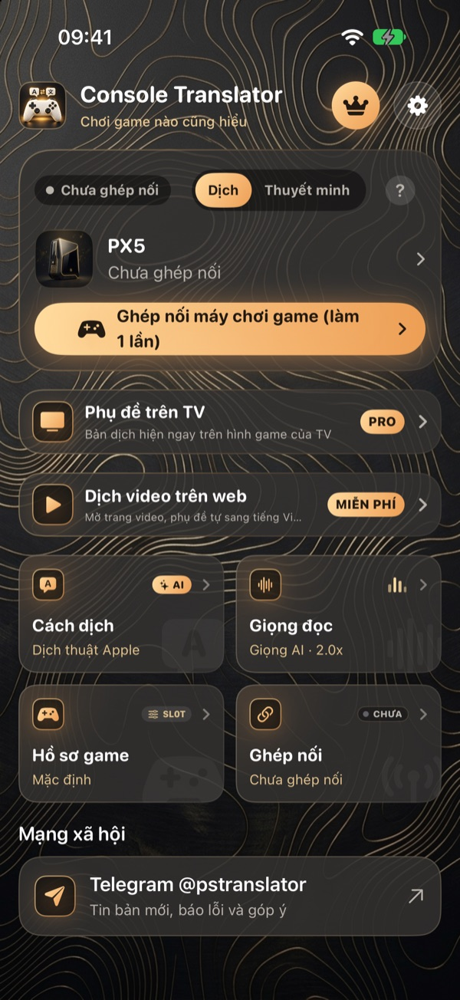
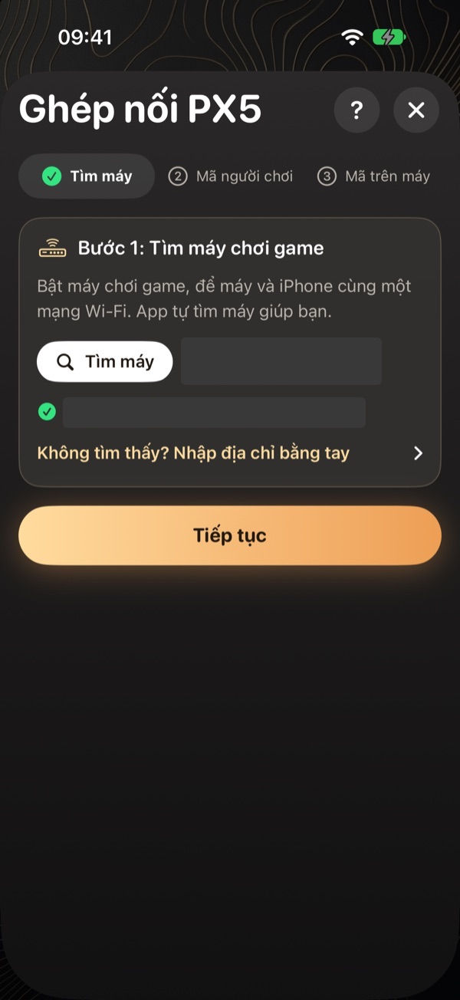
Bước 2: Lấy mã người chơi
Tìm tên đăng nhập (Online ID) ở đâu?
Online ID là tên hiện khi chơi online, không phải email. Cách tìm, chọn một:
- Trên PS5: đăng nhập tài khoản phụ, bấm ảnh đại diện góc phải trên cùng → Hồ sơ (Profile). Online ID là dòng chữ nhỏ ngay dưới tên hiển thị.
- Trên PS5, cách khác: Cài đặt (Settings) → Người dùng và tài khoản (Users and Accounts) → Tài khoản (Account) → Hồ sơ (Profile) → Online ID.
- Trên điện thoại: mở app PlayStation App, đăng nhập tài khoản phụ, bấm ảnh đại diện. Online ID nằm dưới ảnh.
Gõ đúng từng chữ, kể cả chữ hoa, chữ thường, số và dấu gạch (- hoặc _).
Mã người chơi là một dãy ký tự cho biết app kết nối bằng người chơi nào. Lấy mã của người chơi phụ.
- Trên PS5, chuyển sang người chơi phụ. Bấm ảnh đại diện góc phải trên cùng → Hồ sơ (Profile). Tên đăng nhập (Online ID) nằm ngay dưới tên hiển thị. Ghi lại cho đúng từng chữ.
- Trong app bấm Mở trang tra mã, hoặc mở thẳng psntools.com/psn/checker. Trang mở trong Safari. Bảng hỏi cookie thì bấm Configure rồi tắt hết, hoặc bỏ qua.
- Gõ tên đăng nhập vào ô tìm kiếm của trang, đợi trang tìm xong.
- Tìm dòng BASE64 (FOR REMOTE PLAY). Chạm giữ dãy ký tự ở dòng đó, chọn Sao chép. Dãy này kết thúc bằng dấu
=. - Quay lại app, bấm Dán mã. Thấy chữ Đã nhận mã là xong, bấm Tiếp tục.
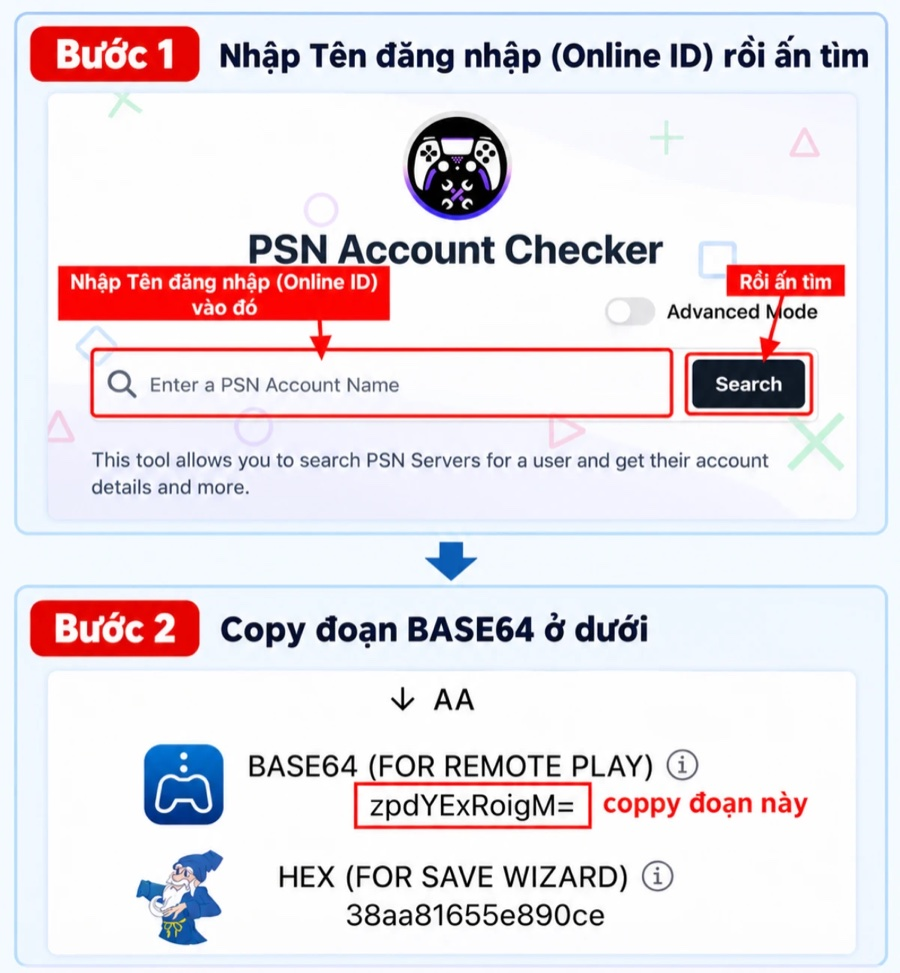
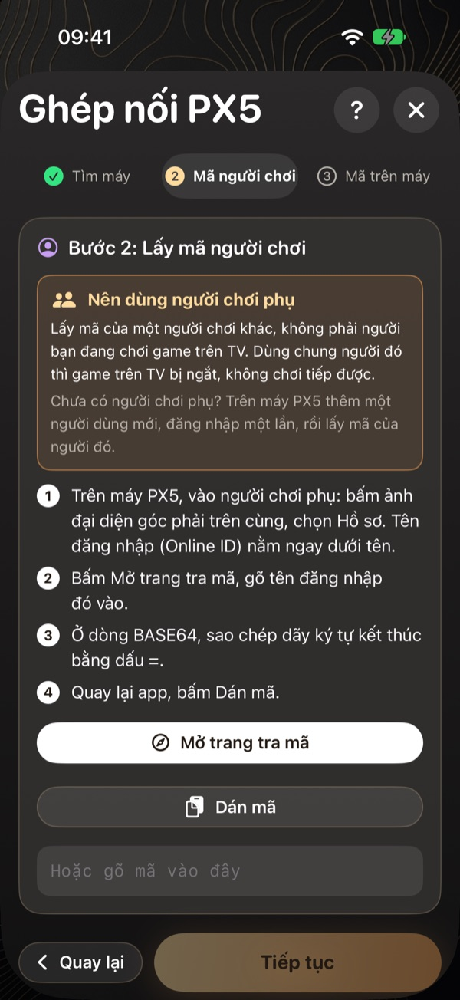
Bước 3: Nhập mã 8 số hiện trên TV
- Trên PS5, đảm bảo đang ở đúng người chơi phụ vừa tra mã (giữ nút PS giữa tay cầm → Chuyển người dùng).
- Vào Cài đặt (Settings) → Hệ thống (System) → Chơi từ xa (Remote Play) → Liên kết thiết bị (Link Device).
- TV hiện 8 chữ số kèm đồng hồ đếm ngược. Mã chỉ dùng được vài phút.
- Nhập ngay 8 số vào app, bấm Ghép nối. Chờ vài giây đến khi app báo ghép nối thành công.
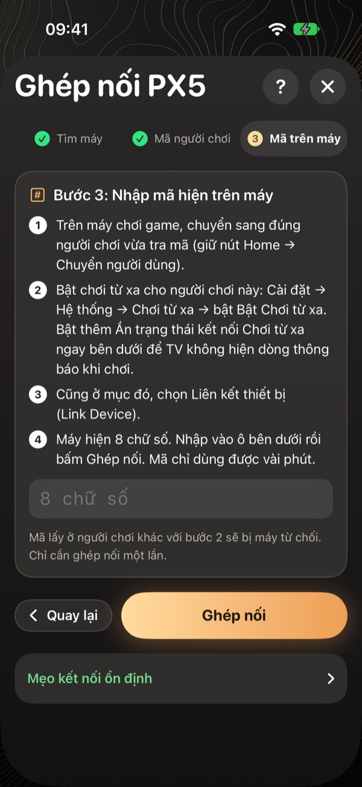
4Chơi và dịch
Ghép nối xong, từ lần sau chỉ cần làm bước này.
- Ở màn chính của app, bấm Bắt đầu dịch game, rồi chọn Dịch khi chơi TV (chơi trên TV) hoặc Chơi trên điện thoại. Nếu PS5 đang nghỉ, app tự bật máy, đợi khoảng 30 giây.
- Khi app kết nối, tay cầm tắt một lát là bình thường: bấm nút PS giữa tay cầm rồi chọn lại người chơi của bạn.
- Vào game, bật phụ đề tiếng Anh (English) trong phần cài đặt của game.
- Trong app, bấm nút khung cắt và kéo khung Thoại (vàng nhạt) trùm lên chỗ phụ đề hiện trên màn hình.
- Chơi bình thường bằng tay cầm. Nhân vật nói gì, app dịch và đọc to bằng tiếng Việt.
Chọn bộ dịch và giọng đọc
Bấm biểu tượng bánh răng ở góc trên màn chính để mở Cài đặt.
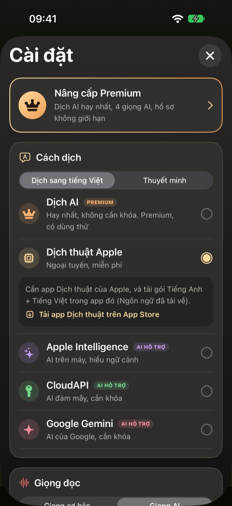
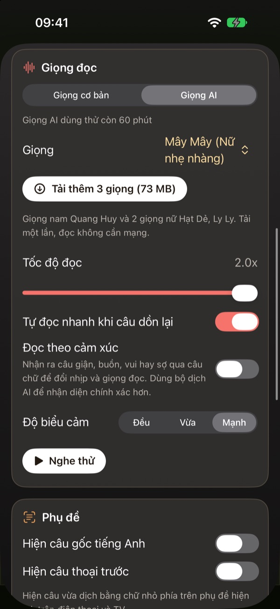
Gặp lỗi? Bấm vào lỗi giống bạn
Không tìm thấy máy
- Kiểm tra iPhone và PS5 cùng một mạng Wi-Fi. Tắt VPN nếu có, không dùng Wi-Fi dành cho khách.
- Mở Cài đặt iPhone → Quyền riêng tư & Bảo mật → Mạng cục bộ, bật cho app.
- Vẫn không thấy thì nhập IP bằng tay. Trên PS5 vào Settings → Network → Connection Status → View Connection Status, xem dòng IPv4 Address (dạng 192.168.x.x).
Ghép nối thất bại
- Vào Enable Remote Play và kiểm tra đã bật đúng User PS5 mà app đang dùng để kết nối.
- Mã người chơi phải đúng người chơi đang chọn trên PS5.
- Mã PIN hết hạn rất nhanh, lấy mã mới rồi nhập ngay.
Ghép nối xong nhưng không vào được game
- Tắt Remote Play đang mở ở thiết bị khác (PC, điện thoại khác).
- Đợi khoảng 30 giây rồi bấm Thử lại.
- Vẫn lỗi thì xoá ghép nối cũ trên PS5 và ghép nối lại từ đầu.
Tay cầm bị ngắt khi app kết nối
Đây là bình thường, không phải lỗi. Bấm nút PS giữa tay cầm, chọn lại người chơi của bạn. Để không bị nữa, làm theo mẹo người chơi phụ ở bước 3.
Có hình nhưng không ra bản dịch
- Kiểm tra game đã bật phụ đề tiếng Anh, khung quét trùm hết chữ phụ đề.
- Dùng Dịch thuật Apple: tải gói Tiếng Anh, Tiếng Việt trong app Dịch thuật.
- Dùng Gemini hoặc CloudAPI: kiểm tra mạng và khóa API.
Có bản dịch nhưng không nghe đọc
Bật nút loa trên màn chơi, tăng âm lượng iPhone, kiểm tra có đang kết nối tai nghe Bluetooth không.
Hình giật hoặc hay rớt mạng
Cắm dây mạng (LAN) cho PS5 nếu được. iPhone nên dùng Wi-Fi 5 GHz và để gần router. Tạm dừng các máy đang tải game hay xem phim.
Không tìm thấy hoặc không kết nối được TV
- Mở app nhận phụ đề trên TV, kiểm tra TV đang hiện mã ghép 8 số.
- iPhone và TV cùng mạng Wi-Fi, đã bật quyền Mạng cục bộ cho app.
- Không tìm thấy TV thì nhập địa chỉ đang hiện trên màn hình app TV. Mã 8 số đổi mỗi phút, dùng mã mới nhất.
- TV chưa có app nhận phụ đề thì xem phần Phụ đề ngay trên màn hình TV.
Dịch cả chữ menu, bảng điểm
Thu nhỏ khung quét cho vừa dòng phụ đề, dời bản dịch ra chỗ khác để không che chữ gốc.